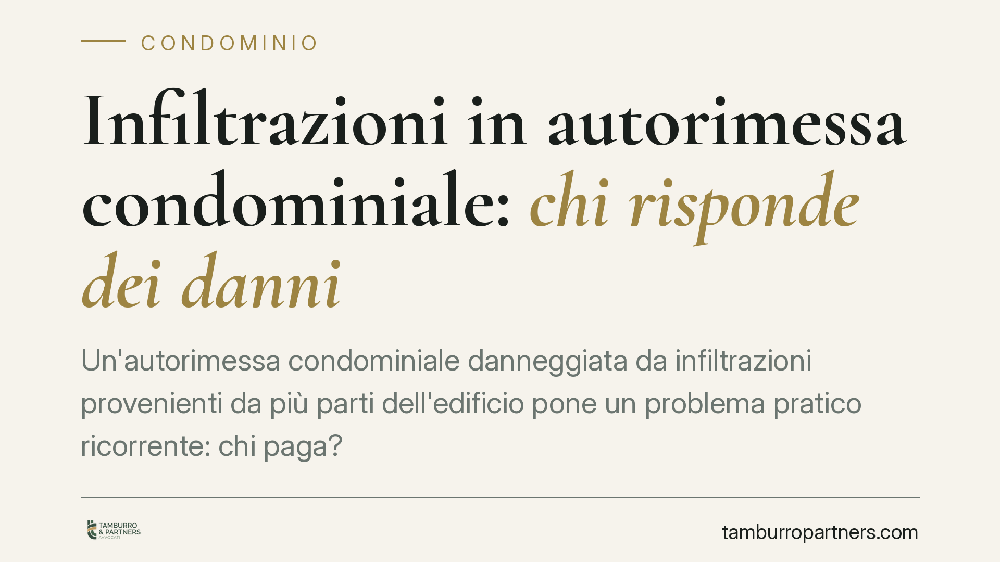

Infiltrazioni in autorimessa condominiale: chi risponde dei danni
Un'autorimessa condominiale danneggiata da infiltrazioni provenienti da più parti dell'edificio pone un problema pratico ricorrente: chi paga? La Cassazione riconosce la responsabilità solidale dei condomini quando il danno deriva da plurime concause, anche senza litisconsorzio necessario. Una lettura che incide su condomini, proprietari di terrazze a uso esclusivo ed esercenti del box.

Il caso
Un'autorimessa condominiale subisce infiltrazioni riconducibili a più fonti: parti comuni dell'edificio e terrazze a uso esclusivo sovrastanti. Il danneggiato agisce per il risarcimento. La questione è se e in che misura i vari proprietari debbano rispondere del danno quando questo deriva dal concorso di più cause.
La Corte di Cassazione, Sezione II, ha ribadito che in presenza di plurime concause i responsabili rispondono in solido ai sensi dell'art. 2055 c.c. Ciò significa che il danneggiato può chiedere l'intero risarcimento a uno solo dei corresponsabili, salvo il diritto di regresso di quest'ultimo verso gli altri.
Inquadramento normativo
Il perno è l'art. 2055, comma 1, c.c.: «Se il fatto dannoso è imputabile a più persone, tutte sono obbligate in solido al risarcimento del danno». La norma non richiede identità di titolo o unicità di condotta: è sufficiente che le diverse cause abbiano concorso a produrre l'unico evento dannoso.
Il comma 2 disciplina il regresso interno: chi ha risarcito l'intero può recuperare dagli altri la quota di rispettiva competenza, in base alla gravità delle singole colpe e all'entità delle conseguenze. Il comma 3 aggiunge una presunzione di pari quote ove le colpe non siano diversamente graduabili.
Un chiarimento doveroso riguarda le infiltrazioni provenienti da lastrico solare o terrazza a uso esclusivo. Le Sezioni Unite (Cass. Sez. Un. n. 9449 del 10 maggio 2016) hanno ricondotto la responsabilità per tali danni all'art. 2051 c.c., ossia alla responsabilità da custodia della cosa. L'art. 1126 c.c. non fonda la responsabilità, ma fornisce il criterio di riparto interno delle spese: un terzo a carico di chi ha l'uso esclusivo, due terzi a carico dei condomini che dalla copertura traggono utilità. Va quindi evitata la qualificazione della fattispecie come responsabilità «contrattuale»: si tratta di responsabilità da cosa in custodia.
La distinzione che conta
Solidarietà esterna e riparto interno operano su piani diversi. Verso il danneggiato, i corresponsabili rispondono per l'intero (art. 2055, comma 1, c.c.). Tra loro, il peso del risarcimento si distribuisce secondo il grado di responsabilità o – nel caso di infiltrazioni da lastrico o terrazza a uso esclusivo – secondo la ripartizione dell'art. 1126 c.c. Il danneggiato non deve ricostruire l'esatta incidenza di ciascuna concausa per ottenere il ristoro.
Implicazioni pratiche
Per il condomino danneggiato (esercente o proprietario del box): può rivolgere la domanda anche a un solo corresponsabile per l'intero danno, senza dover citare tutti i possibili responsabili. Non è richiesto il litisconsorzio necessario tra i corresponsabili solidali.
Per il condominio: l'ente può essere chiamato a rispondere per i vizi delle parti comuni concorrenti al danno. L'amministratore ha interesse a documentare tempestivamente cause e responsabilità per impostare l'eventuale regresso.
Per il proprietario della terrazza a uso esclusivo: è custode ai sensi dell'art. 2051 c.c. e risponde in solido, salvo poi ripartire l'onere secondo l'art. 1126 c.c. (un terzo a proprio carico, due terzi ai condomini serviti dalla copertura).
Cosa fare in concreto
- Documentate subito il danno: fotografie datate, verbali, eventuali perizie di parte sulla dinamica e sull'origine delle infiltrazioni.
- Inviate una messa in mora ai soggetti potenzialmente responsabili (condominio, proprietari delle terrazze), interrompendo la prescrizione e formalizzando la richiesta.
- Valutate un accertamento tecnico preventivo ex art. 696-bis c.p.c.: consente di cristallizzare cause ed entità del danno e favorisce la conciliazione prima del giudizio.
- Conservate ogni prova delle spese sostenute per riparazioni urgenti, utili sia in sede di risarcimento sia in sede di regresso.
- Se avete già risarcito l'intero come corresponsabili, avviate l'azione di regresso ex art. 2055, comma 2, c.c. per recuperare le quote altrui, ricordando la presunzione di pari quote in difetto di prova diversa.
Una riflessione finale
La solidarietà dell'art. 2055 c.c. tutela chi subisce il danno, ma sposta sul corresponsabile solvente l'onere di recuperare le quote altrui. Per questo la ricostruzione tecnica delle cause – fin dalle prime fasi – resta decisiva: non tanto per ottenere il risarcimento, quanto per gestire correttamente il successivo riparto tra i responsabili.
---
*Contributo informativo a cura di Tamburro & Partners – Avv. Giuseppe Tamburro. Non costituisce parere legale.*
Ogni condominio ha una storia a sé.
Se gestisci un'amministrazione e vuoi un confronto su una specifica questione condominiale, scrivi allo studio. Ti rispondiamo entro un giorno lavorativo.